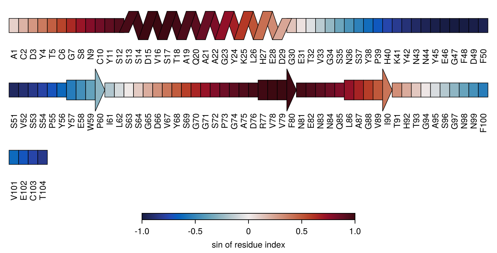
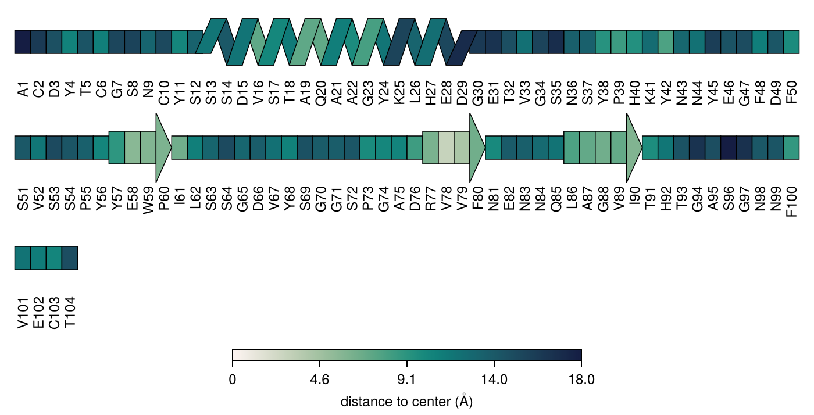
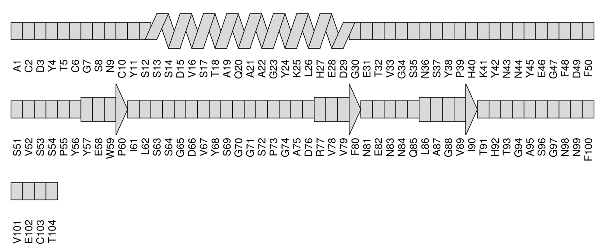
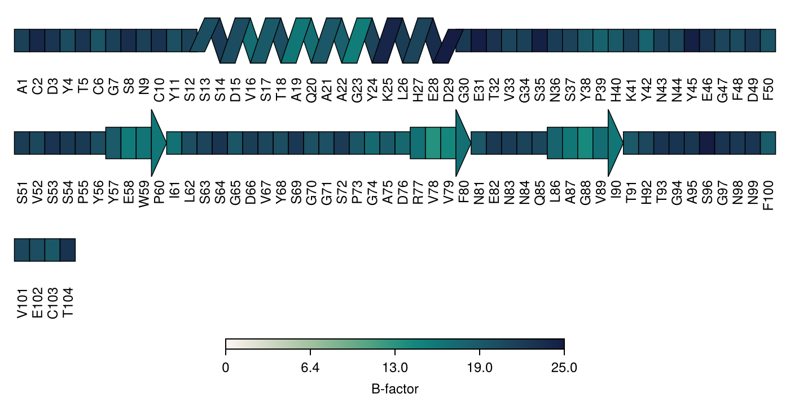

Secondary structure diagrams
plot_ss_diagram draws the secondary structure of each residue along the sequence, with each residue colored by a value: helices as ribbons, β strands as arrows and loops as thin bars. A Makie backend must be loaded: CairoMakie (used here, for figures saved as SVG or PDF), or GLMakie/WGLMakie for interactive use.
Coloring by custom values
The simplest way to color the residues is to give one value per residue, in the order of eachresidue(atoms), with the property keyword:
using PDBTools, LazyArtifacts, CairoMakie
atoms = read_pdb(PDBTools.test_file("structure.pdb"), "protein")
nres = length(eachresidue(atoms))
values = [sin(i / 10) for i in 1:nres]
plot_ss_diagram(atoms; property = values, colorbar_title = "sin of residue index")
The secondary structure is computed with DSSP (ss_method = :dssp, default) or STRIDE (ss_method = :stride). Helices shorter than 4 residues and strands shorter than 3 residues are drawn as loops. Each row has 50 residues, and each chain starts a new row, labeled on the left (chain_new_row = true).
Coloring by a property of the atoms
By default, the residues are colored by the B-factor column of the structure (property = :beta). Any field of the atoms can be used by its name, e.g. property = :occupancy, and the values of the atoms of each residue are combined by aggregate:
- the mean (default): for B-factors, or when the same per-residue value was written in all atoms of the residue;
aggregate = sum: for additive per-atom values, such as atomic contributions to a coordination number from ComplexMixtures.jl.
Here, the residues are colored by their mean B-factor (in this test structure, the B-factors grow from the core to the surface of the protein):
plot_ss_diagram(atoms; colorbar_title = "B-factor")
property can also be a function of the atom. Here, each residue is colored by the mean distance of its atoms to the center of mass:
c = center_of_mass(atoms)
distance_to_center(at) = sqrt((at.x - c[1])^2 + (at.y - c[2])^2 + (at.z - c[3])^2)
plot_ss_diagram(atoms; property = distance_to_center, colorbar_title = "distance to center (Å)")
Using a precomputed secondary structure
To avoid computing the secondary structure again, the output of dssp_run or stride_run can be given directly. Without values, only the drawing is shown:
ss = dssp_run(atoms)
plot_ss_diagram(ss)
Values can be given with property, one per element of the output of dssp_run or stride_run, which has one element per protein residue (residues that DSSP or STRIDE cannot classify, e.g. with missing backbone atoms, are assigned as loop or coil):
plot_ss_diagram(ss;
property = [sum(beta, r) / length(r) for r in eachresidue(atoms)],
colorbar_title = "B-factor"
)
Saving
The figure has a fixed layout (rows of 50 residues, ≈ 24 cm wide, and a 12 pt font, Computer Modern if available), so that all diagrams come out identical. To keep the sizes in typographic points, save it as SVG with CairoMakie and pt_per_unit = 1 (with another backend, call CairoMakie.activate!() before saving). With pt_per_unit = 2/3, the figure has the width of a full page (≈ 16 cm), with an 8 pt font:
fig = plot_ss_diagram(atoms; colorbar_title = "B-factor")
CairoMakie.save("diagram.svg", fig; pt_per_unit = 1) # `save` is also exported by PDBTools
CairoMakie.save("diagram_page_width.svg", fig; pt_per_unit = 2/3)The background is white by default; use background_color = :transparent for a transparent background.
To set the size of the figure, use size = (width, height) (in pt). The rows are then stretched to fill the figure, and the font size is kept:
fig = plot_ss_diagram(atoms; size = (800, 600))Color scale
When some values are negative, the color scale is symmetric around zero and uses a diverging color map (:balance); otherwise it goes from zero to the maximum and uses a sequential color map (:tempo). This can be changed with range_mode (:auto, :symmetric or :positive) and colormap.
The keyword color_scale defines how the values are mapped to colors:
:robust(default): linear, with the upper limit at the 99% quantile of the absolute values (clip_quantile), so that a few extreme residues do not wash out the others;:linear: linear, with the upper limit at the maximum absolute value;:asinh: linear for small values and logarithmic for large ones, for values that span several orders of magnitude.
To compare several structures on the same scale, fix the limit (and, for :asinh, the scale) in the units of the values, with the same values in all figures:
fig1 = plot_ss_diagram(atoms1; property = values1, color_limit = 2.0)
fig2 = plot_ss_diagram(atoms2; property = values2, color_limit = 2.0)With normalize_per_chain = true, the values of each chain are divided by the maximum absolute value of that chain.
Reference
PDBTools.plot_ss_diagram — Function
plot_ss_diagram(atoms::AbstractVector{<:Atom}; property = :beta, aggregate = mean, ss_method = :dssp, kwargs...)
plot_ss_diagram(ss::AbstractVector{<:SSData}; property = nothing, kwargs...)Draw the secondary structure of each residue along the sequence (helices as ribbons, β strands as arrows and loops as thin bars), with each residue colored by a value. Requires a Makie backend (e.g. using CairoMakie, or GLMakie for interactive use), and returns a Makie.Figure.
Input
atoms: the secondary structure is computed withdssp_run(ss_method = :dssp, default) orstride_run(ss_method = :stride).ss: the output ofdssp_runorstride_run, aVector{SSData}, so that the secondary structure is not computed again.
Helices shorter than 4 residues and strands shorter than 3 residues are drawn as loops.
Values of the residues
With atoms, property can be:
- a
SymbolorStringwith the name of an atom field, combined for the atoms of each residue byaggregate::beta(default, the B-factor column),:occupancy(or:occup),:charge, etc.; - a function of the atom, e.g.
at -> at.beta^2, also combined byaggregate; - a vector with one value per residue, in the order of
eachresidue(atoms).
aggregate is called as aggregate(f, residue). Default: the mean. Use sum for additive per-atom values (e.g. atomic contributions to a coordination number, from ComplexMixtures.jl). maximum and minimum can also be used.
With ss, property is nothing (default: only the drawing, without colors) or a vector with one value per element of ss.
Layout
The figure has a fixed layout, so that all diagrams come out identical: 50 residues per row, 13.5 pt per residue (≈ 24 cm wide rows) and a 12 pt font (Computer Modern, cmr10, if available). The height grows with the number of rows. To keep the sizes in typographic points, save as SVG with CairoMakie: CairoMakie.save("diagram.svg", fig; pt_per_unit = 1) (save alone is ambiguous, because it is also exported by PDBTools). With pt_per_unit = 2/3, the figure has the width of a full page (≈ 16 cm), with an 8 pt font.
Keyword arguments
colormap = nothing: color map. Ifnothing, uses:balance(diverging, zero = white) when the color range is symmetric and:tempo(sequential) when it is(0, limit).colorbar = true,colorbar_title = "": horizontal color bar below the rows (not drawn when there are no values).color_scale = :robust: how values are mapped to colors::robust: linear, with the limit at the quantileclip_quantileof the absolute values;:linear: linear, with the limit at the maximum absolute value;:asinh:asinh(value / asinh_scale), linear for small values and logarithmic for large ones, for values that span several orders of magnitude.
range_mode = :auto::symmetric((-limit, limit), zero at the center of the color map),:positive((0, limit)) or:auto(symmetric if there are negative values).color_limit = nothing,asinh_scale = nothing: limit of the color scale and scale of:asinh, in the units of the values. Use the same values to compare several diagrams.clip_quantile = 0.99: quantile used by:robust.signed_tolerance = 1e-6: values smaller than-signed_tolerance * maximum(abs, values)are considered negative byrange_mode = :auto.normalize_per_chain = false: divide the values of each chain by the maximum absolute value of that chain.chain_new_row = true: each chain starts in a new row, labeled on the left.background_color = :white: background of the figure (e.g.:transparent).font = "cmr10": font of the labels. Makie uses a default font if it is not found.size = nothing: size of the figure, as(width, height), in pt. By default, the size is fixed by the content (675 pt wide rows, 60 pt high), such that all diagrams have the same scale. With a given size, the rows are stretched to fill the figure (the font size is not changed).
Values beyond the color limits take the color of the extreme of the color map.
Examples
julia> using PDBTools, LazyArtifacts, CairoMakie
julia> atoms = read_pdb(PDBTools.test_file("structure.pdb"), "protein");
julia> fig = plot_ss_diagram(atoms; property = :beta, colorbar_title = "B-factor");
julia> ss = dssp_run(atoms);
julia> fig = plot_ss_diagram(ss); # only the drawing
julia> CairoMakie.save("diagram.svg", fig; pt_per_unit = 1)